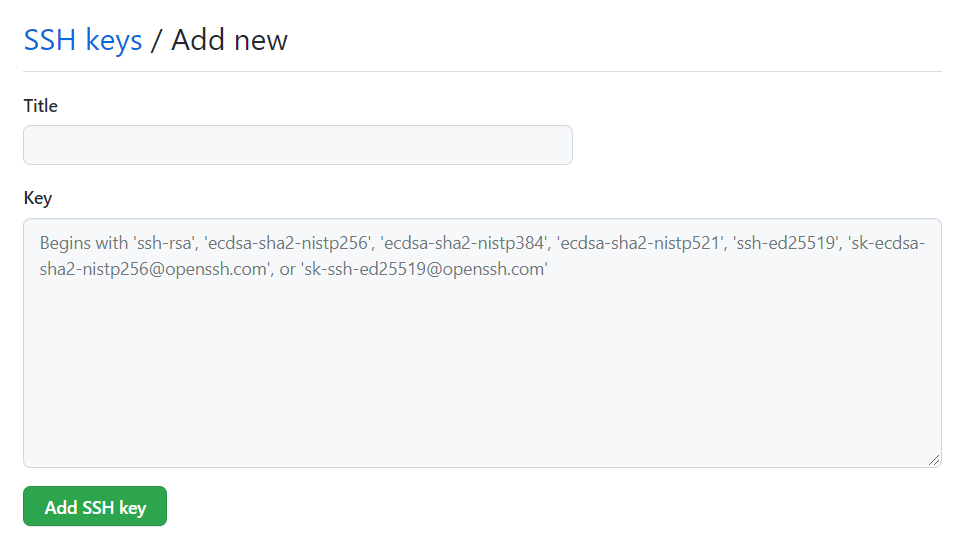

本博客的诞(cai)生(keng)记录，顺便记录一下建立博客的大致流程
关于我是怎么出生的——本站的诞生血泪史
折腾了一年，一切终于回到了正轨，在研究生生涯即将开始之际(开始两周了已经)，笔者萌生了想建个博客，记录和分享自己的学习思考过程的想法，一番折腾后的结果便是本站的诞生。那么，值得纪念的第一篇博客就用来记录本站的搭建过程吧。
本文将简单描述笔者从一无所有到获得一个博客，到写完本篇文章的全过程(win10环境下)。其中包括：
1.前期准备：git,nodejs,hexo的安装，GitHub账号的申请，博客用repository的创建
2.站点建立：GitHub和git的远程连接，hexo站点配置
3.编写博客：Sublime Text3的Markdown相关配置
本文仅保证在笔者所在的时间点下可以成功，并不保证之后依然适用(我寻思也不会有太大变化)，如果能为读者提供一丢丢的参考或帮助的话，本文的目的就算达到了。
那么，直接开冲！
前期准备
关于git,nodejs,hexo这些都是什么，百度或Google一下大概会得出很多简短又清晰的答案，笔者并不打算在这里介绍(其实就是说不清楚)而且这个也不是本文的目的。因此直接搞起：
GitHub账号注册、repository的创建
首先，我们需要一个GitHub账号，并且在里面创建一个repository，可以简单理解为放置博客文件的仓库：(https://github.com/)
账号的申请，网站的指示说得相当明确，一般不会出现太大问题。中间会有一步要求输入username，这个名字将会成为博客网站的重要组成部分，请慎重。
申请完毕后，登录将会出现如下的界面:
左边框里即为username，请记住。点击右边框的加号，点击New repository:
如上图设置即可。注意username.github.io中username替换为自己起的名字。
完成创建后点击settings，拉到最下方的GitHub Pages一栏，点击Check it out here!跳转，会显示Your site is published at https://xxx.github.io 点击该网站即可跳转到博客最初始的样子，目前还不需要对它做任何改动，在之后的步骤中它也会被hexo生成的页面覆盖掉，因此看看就好。
git、nodejs、hexo的下载安装
接下来是git，有了这个就可以把本地的网站文件上传到GitHub上的仓库里了。
下载地址：官网下载地址
选择自己对应的系统版本下载安装即可，安装过程一路next即可，没有需要特别注意的地方。安装完毕后打开命令提示符，输入git --version查看git的版本，若有结果且和安装的版本一致即安装成功。
之后则是nodejs和hexo的安装，有了他们就可以开始初步进行博客的编辑了。
下载地址：官网下载地址
进入后可以看到两个版本的nodejs可以下载，这里千千万万一定一定要选择左边稳定的版本，鬼知道笔者安装了最新版之后报了多少谜之错误。
安装过程同样需要注意的内容不多，一路next即可。安装成功后，在命令提示符中输入node -v和npm -v，如果有结果且和安装的版本一致，则安装成功。
选择或创建一个目录，作为之后放置一切博客文件的本地位置。在该目录下右键+Git Bash Here打开git，输入npm i hexo-cli -g安装hexo，完成后输入命令hexo -v验证是否安装成功。成功后，输入hexo init进行网站的初始化，完成后会在该目录下创建一系列的文件，这些就是组成我们博客的文件。
接下来，连续输入以下三条命令：
1 | hexo clean |
他们的功能分别为清除缓存、生成静态网页、启动服务器，完成后，在浏览器打开http://localhost:4000/即可查看由hexo生成的网页，之后要编辑的博客就会生成到该页面上。
站点建立
完成上面的步骤之后，建立博客所需的工具就备齐了，下面开始站点的建立。
git使用ssh远程连接GitHub仓库
首先，将GitHub和git连接起来：
在git bash中输入以下命令：
1 | git config --global user.name "username" |
这里的username和email都修改为GitHub账号的用户名和邮箱，之后再输入以下命令：
1 | ssh-keygen -t rsa -C "email" |
中间需要确认的步骤一路回车即可。完成后便生成了ssh密钥文件，需要把该文件的内容复制到GitHub仓库中，首先打开该文件：
1 | cat ~/.ssh/id_rsa.pub~ |
将出现的内容复制到剪贴板中，然后打开GitHub，点击头像然后点击settings，如下图：
先点击SSH and GPG keys然后再点击New SSH key，如下图所示：
进入下图所示的页面，把刚刚复制的内容放到Key一栏下，Title的内容可以随便填写，然后点击Add SSH key即可。

完成之后在git bash中输入
1 | ssh -T git@github.com |
第一次登录可能会有一系列确认，输入yes回车即可如果出现了"Hi,username! You've successfully......"这类的文字，则连接成功。
修改hexo配置，完成连接本地文件和仓库
之后，来到博客的目录下，打开_config.yml文件，这个文件是博客的配置文件，可以查阅hexo的官方文档学习它的内容，进而对博客进行配置。本次直接拉到最下方，修改deploy下面的内容：
1 | deploy: |
repository处的内容，同样将username替换即可，这里要注意"："之后必须添加一个空格再输入内容，鬼知道笔者在这里卡了多久。
完成了以上步骤之后，再次输入网站username.github.io，就可以进入到博客了，这时会发现，网站的内容已经从GitHub的网页变成了hexo的网页，这就意味着博客正式建好，之后就可以进行美化以及博文的撰写了。
编写博文
博文的创建和编辑
从这里将开始正式的博文编写。首先，进入到博客所在的目录下，在git bsah中输入以下命令安装依赖：
1 | npm install hexo-deployer-git --save |
然后打开_config.yml文件，修改以下内容：
1 | post_asset_folder: true |
然后在bash中输入：
1 | hexo new post name |
name就是博客的名字。完成后，在source\_post目录下会生成一个name.md的文件和一个name文件夹，他们分别是博文的主体和相关文件(图片等)存放的位置。
.md文件就是Markdown文件，可以直接使用记事本打开，用Markdown的语法进行编写。笔者主要的文本编辑器为Sublime Text3，所以在这里简单介绍一下该软件如何安装相关的支持。其他文本软件的处理方式大同小异，请自行搜索。
首先，打开Sublime Text3，使用组合键ctrl+Shift+P，在弹出的框中填入Package Control: Install Package，回车。
之后在新弹出的框中输入Markdown，找到MarkdownEditing插件并点击(笔者由于已经安装过，所以无法搜索到)，等待几秒即可安装成功。
之后再使用Sublime Text3打开.md文件即可使用该插件进行编辑了。
博文的预览和上传
关于博文的预览，Sublime Text3有一些插件可以实现实时的预览，但是笔者比较懒不想折腾，所以在这里提供一种方法：
完成博文的编辑后，保存，在bash中输入之前的三条hexo命令：
1 | hexo clean |
之后就可以在http://localhost:4000/随时查看编辑好的博文了，如果对博文有修改，保存文件后直接刷新网页就可以看到新编辑的内容。
那么当博文编写完成，格式排版都没有问题，可以正式上传的时候，请输入以下三条命令：
1 | hexo clean |
完成后打开博客的网页username.github.io，就可以看到博文已经上传完毕，出现在网站上了。
尾声
至此，一个使用hexo默认主题landscape，基于GitHub仓库，使用git来进行本地和仓库的文件传输，使用Sublime Text3进行Markdown博文编写的博客就算是正式诞生了，本文的主要内容到此也算结束了。实际上博客的建立还有很多内容可以说，比如切换主题、添加插件以及其他美化等，但是笔者自己都没鼓捣明白，所以还是留给各位读者自己探索吧。
这次博客的建立和第一篇博文的撰写，也算是给笔者打开了新世界的大门。随着内容不断变多，笔者也逐渐意识到自己虽然知识储备、表达能力贫瘠，但是还是很乐于写这类有趣的小东西的(就是人菜瘾大)，希望可以坚持下来，让这个博客成为笔者成长的记录吧。
最后，用笔者最近很喜欢的一个小杯饰结束这篇文章好了，愿各位共勉。